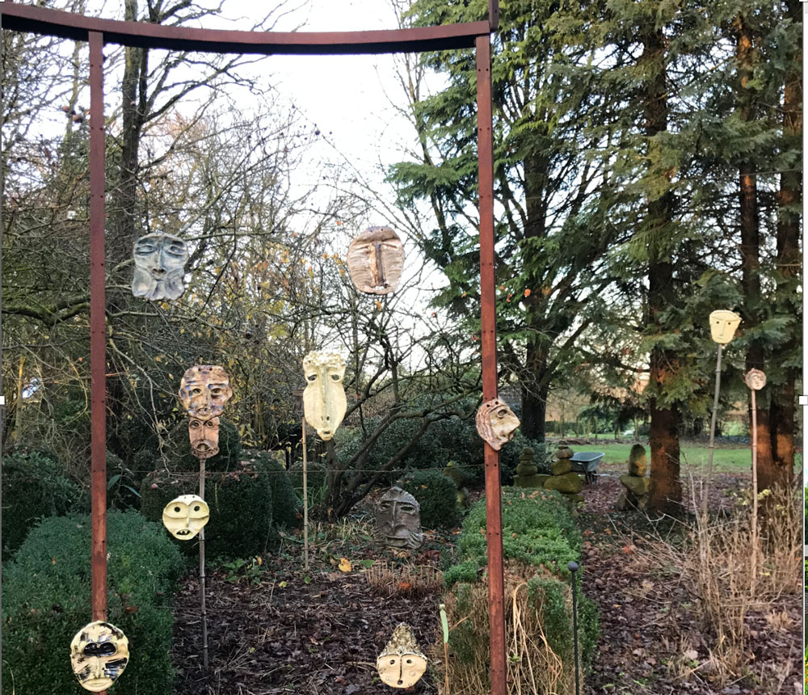
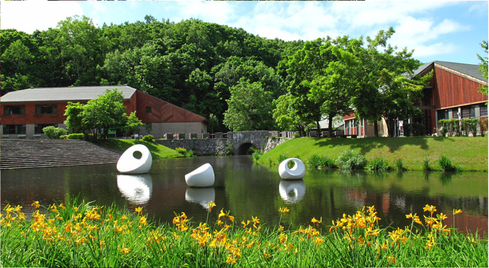
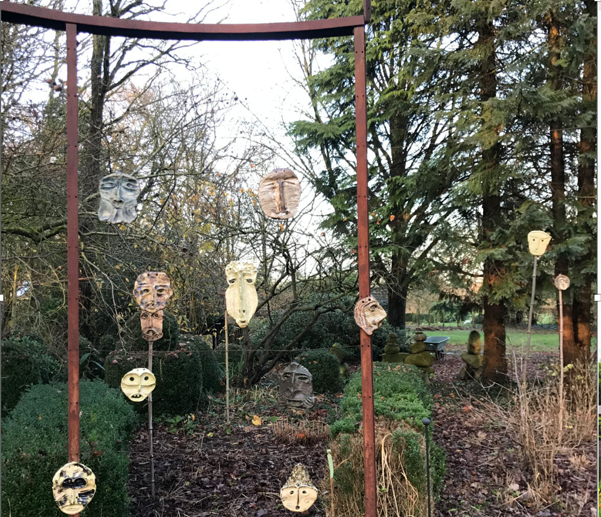
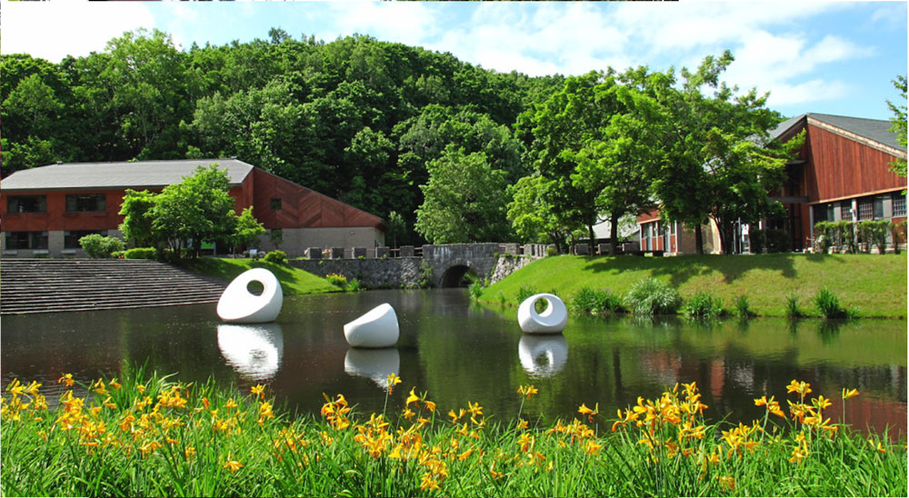

About the site
Welcome to the Agroecological Cultural Precincts site.
Agroecological Cultural Precincts (ACPs), a research proposal work that combines Arts and Agroecology.
How to coexist harmoniously with the other, be that person, animal, plant or landscape, so that each can find a space for self-realization through a mutually enriching coexistence?
This is an interdisciplinary project that combines Arts and Agroecology to explore the wide range of possibilities to relate to the environment sustainably.
Through interventions that stimulate curiosity and invite action, ACP visitors are expected to exhibit behaviors that should shed light on how they signify—and relate to—nature, how this relation can be understood from the cultural and historical point of view and how it can be reshaped or developed further.
I ask whether arts and agroecology in urban areas can effect the kind of reconnection proposed in my research question, and whether they can do so with minimum external inputs, and thus attain the UN’s Sustain4able Development Goals (SDGs).
Greetings,
Rodrigo Arenas Catalán.
 


